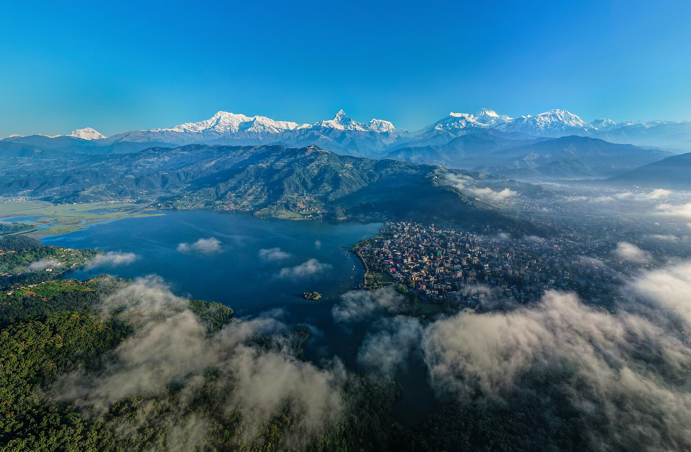

Pokhara is one of the most beautiful and popular cities in Nepal, known for its stunning natural scenery, peaceful lakes, and breathtaking views of the Himalayas. It is located in the Gandaki Province, near the famous Annapurna mountain range. Known as the “Gateway to the Annapurna Circuit,” Pokhara attracts visitors from around the world who come to enjoy its lakes, mountains, caves, waterfalls, and outdoor adventures. The city is especially famous for Phewa Lake, where visitors can enjoy boating while seeing the reflection of the Annapurna and Machhapuchhre (Fishtail) mountains. Pokhara is also a popular destination for activities such as paragliding, trekking, boating, and hiking. Today, Pokhara remains a symbol of Nepal’s natural beauty, adventure, and peaceful mountain landscapes.
